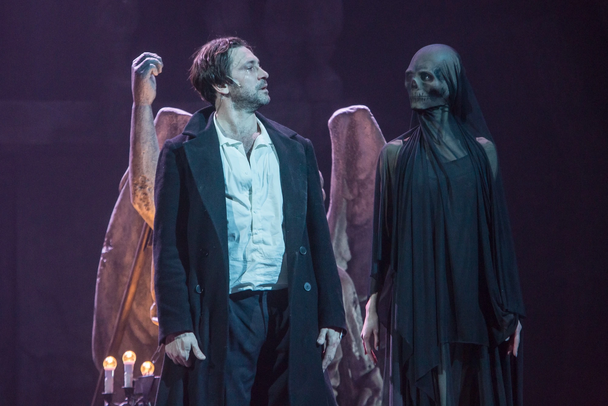
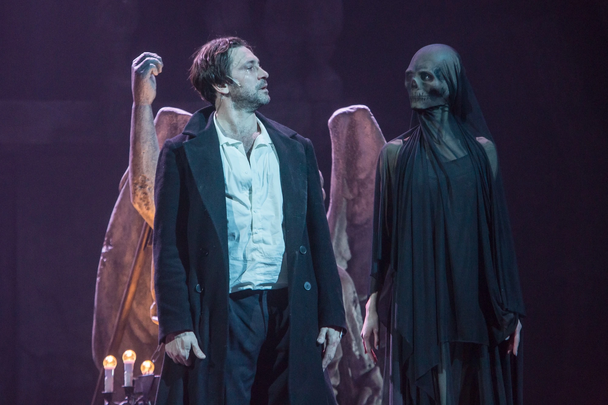
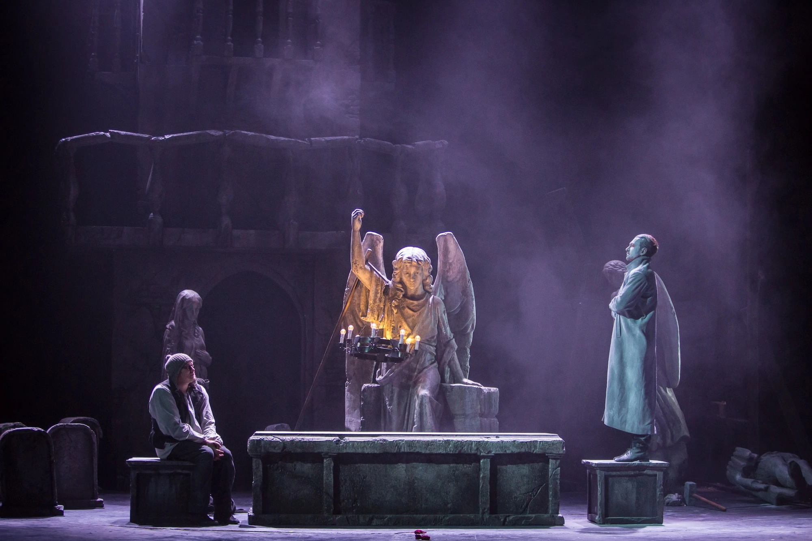
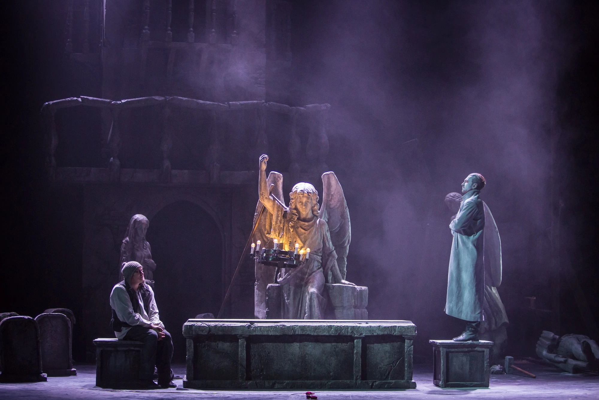

 

Дон Жуан.
Новый миф
Смерть и страсть в танце вечного искушения
Автор: Ж.-Б. Мольер в переводе А. В. Федорова
Режиссёр: Максим Меламедов
Премьера: 8 марта 2025 года
Продолжительность: 2 часа
Жанр: Трагикомедия
Дон Хуан, Дон Жуан, Дон Гуан... В мировой литературе, народных легендах, рыцарских балладах, музыке, кажется, нет образа более известного, бередящего фантазию художников. Удивительно, что изначально жестокий, безнравственный искатель приключений, насильник и убийца, Дон Жуан с течением времени становится в искусстве все более обаятельным и популярным обольстителем и философом. Да, он опасен, циничен, но так прекрасен! А люди склонны верить красивым людям. В чем же истинная тайна этого персонажа, которому удалось пройти сквозь века, по-прежнему вдохновляя художников на создание все новых и новых вариаций мифа о коварном обольстителе Дон Жуане, бросившем вызов общественной морали и небесам?
- Дон Жуан — Антон Хабаров
- Эльвира — Елена Хабарова
- Сганарель — Михаил Шилов
- Смерть — Анастасия Теплинская
- Шарлотта — Валерия Минина
- Матюрина — Наталья Качалкина
- Пьеро, муж Шарлотты — Сергей Медведев
- Робер, муж Матюрины — Игорь Назаренко
Санкт-Петербург, набережная реки Фонтанки, 49